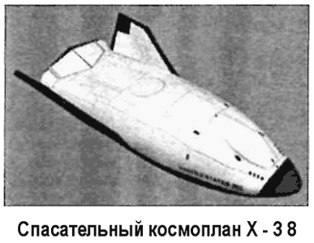
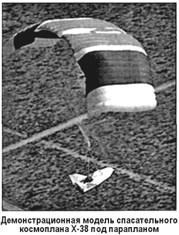

Космоплан Х-38
Космоплан Х-38, известный также под обозначением Х-35 и X–CRV, представляет собой прототип спасательной «шлюпки» для экипажа Международной космической станции (МКС). Он может быть использован и в качестве транспортного корабля, выводимого в космос ракетойносителем «Ариан-5» («Ariane 5»).
Разработка космической спасательной «шлюпки» началась еще в 70-х годах. Современный ее вариант основывается на конструкции челнока Х-24А (его мы обсуждали в главе 8). Главной «изюминкой» нового проекта является использование параплана в качестве тормозящего и посадочного средства. Параплан позволяет осуществить управление посадкой с возможностью бокового маневра на дальность до 1300 километров.
Первые испытания параплана состоялись в 1996 году, а первые полеты Х-38 на подвеске самолета В-52 начались в феврале 1997 года.

Спасательный космоплан Х-38 не имеет собственных двигателей и представляет собой летательный аппарат с несущим корпусом. Возвращение на Землю будет проходить по той же схеме, как и возвращение «Спейс Шаттла». И только на завершающем этапе будет выпускаться параплан. На Х-38 не будет ручного управления — процедура входа в атмосферу и спуск предполагается полностью автоматизировать.
Габариты Х-38: длина — 8,7 метра, максимальный диаметр — 4,4 метра, полная масса — 8163 килограмма. Количество спасаемых астронавтов — 6 человек. Система жизнеобеспечения рассчитана на четыре дня. Продолжительность эксплуатации в качестве модуля МКС — 4000 дней.
Испытания демонстрационной модели космоплана Х-38 проводились в Летно-исследовательском центре НАСА имени Драйдена, расположенном на территории базы ВВС Эдвардс (штат Калифорния).
В марте 1998 года первую модель постигла неудача: во время самостоятельного полета парашют-крыло был поврежден и Х-38 разбился. После этого было принято решение об укреплении его конструкции. Уже в феврале 1999 года вторая модель, получившая условное обозначение V-132, была готова к испытаниям. От предшественницы новая модель отличается еще и тем, что на ней установлена активная система управления полетом, которая позволит Х-38 выполнять маневры во время спуска.
Первый самостоятельный полет второй модели состоялся 6 февраля 1999 года. Х-38 отделился от самолета-носителя В-52 на высоте 6700 метров. Несколько минут он находился в свободном полете, после чего над ним раскрылся параплан, и через 12 минут Х-38 приземлился.
Борьба за контракт на производство Х-38 развернется, видимо, между компаниями «Боинг» и «Локхид-Мартин».
Полностью проверенный и готовый к использованию спасательный аппарат предполагается разместить на МКС в 2003 или 2004 году. Он будет пристыковыван к ее внешней поверхности и использован только для экстренной эвакуации экипажа, когда не будет времени дожидаться прилета «Спейс Шаттла». Пока же роль «спасательной шлюпки» на Международной космической станции исполняет российский космический корабль «Союз».
